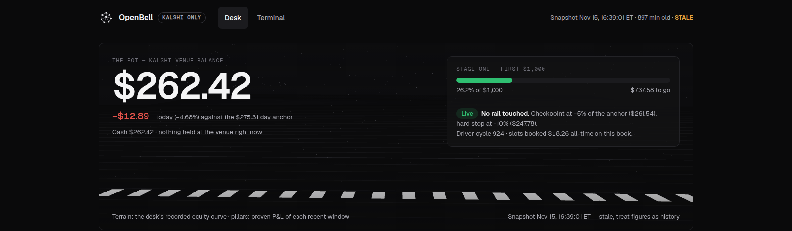

OpenBell — a trading desk for Kalshi
A trading desk with hard rules.
A desk for Kalshi's 15-minute markets, run inside fixed risk rules it cannot bend — every order placed by hand, and every result read back from the venue's own record.
The desk, as it stands

Every order passes one gateway — try it
The strategy asks to trade. A slot wants into a 15-minute market, at a price it likes.
Final-minute check. No new entries in a market's last 60 seconds — the price can swing too far to trust.
Price-ceiling check. Entries stop at the fair-price cap. The desk never chases a price past it.
Day-guard check. The day is measured against the venue's own numbers. At −10%, the desk stops for the day.
How the desk is built
Slots
One market, one slot
Each 15-minute market gets its own slot and a fixed share of the pot. No slot can quietly take the whole account.
Gateway
One door, checked
Every order passes a single gateway that enforces the rules above before the order exists. There is no second path.
Record
The venue keeps the score
Fills, exits and profit are read back from Kalshi's own record. If the desk's book and the venue disagree, the venue wins.
Where it stands
The desk lost money, and it is paused. On 15 November 2026 the day ran against it and its own day guard stopped it. The desk is paused while the system is being rebuilt.
This page describes the tool — what it does and the rules it trades under. It makes no performance claims, and it will not dress a losing record up as anything else.